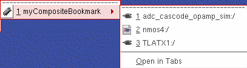

Restoring a Bookmark
You can restore single or composite bookmarks using:
A composite bookmark is a bookmark created from all tabs in a session window. When you restore a composite bookmark, you can restore the entire set of tabs or just one of the tabs that makes up the set.
The following symbols identify single bookmarks (schematic, symbol, layout views):
The following symbol identifies a composite bookmark:
You can also access bookmark functionality from the CIW (File – Bookmarks). When opening/restoring a bookmark from the CIW, the design gets opened in a new session window rather than opening it as a new tab in the current session window.
Restoring a Single Bookmark
To restore a single bookmark from the Bookmarks toolbar:
To restore a single bookmark using the File menu:
-
In either the session window or the Command Interpreter Window,
choose File – Bookmarks.
A submenu appears. -
If the bookmark appears on the Bookmarks toolbar, choose Toolbar Bookmarks.
A pull-right menu appears. -
Select the bookmark you want to restore.
The bookmarked view appears in your session window.
Restoring a Composite Bookmark
When you restore a composite bookmark, you can choose to restore the entire set of views that make up the composite bookmark, or just one view from the composite.
To restore all views that comprise a composite bookmark from the Bookmarks toolbar:
-
Click the down arrow to the right of the composite bookmark name.
A drop-down menu appears.
If you click directly on the composite bookmark name only the first view listed in the composite bookmark gets opened in a new tab. -
Select Open in Tabs.
Each view in the composite bookmark opens in an individual tab in your session window.
If you do not see your composite bookmark on the Bookmarks toolbar, you might find it on the File – Bookmarks menu instead.
To restore a composite bookmark using the File menu:
-
In either the session window or the Command Interpreter Window,
choose File – Bookmarks.
A submenu appears. -
If the bookmark appears on the Bookmarks toolbar, choose Toolbar Bookmarks.
A pull-right menu appears. -
Select the bookmark you want to restore.
A pull-right menu of views appears.
 -
At the bottom of this menu, select Open in Tabs.
The bookmarked views appear on new tabs in your session window.
Restoring a View from a Composite Bookmark
To restore one view from a composite bookmark on the Bookmarks toolbar:
-
Click the down arrow to the right of the composite bookmark name.
A drop-down menu appears.
If you click directly on the composite bookmark name only the first view listed in the composite bookmark gets opened in a new tab.
-
Select the view you want to restore.
The bookmarked view appears in your session window.
If you do not see your composite bookmark on the Bookmarks toolbar, you might find it on the File – Bookmarks menu instead.
To restore a cellview from a composite bookmark using the File menu:
-
In either the session window or the Command Interpreter Window,
choose File – Bookmarks.
A submenu appears. -
If the bookmark appears on the Bookmarks toolbar, choose Toolbar Bookmarks.
A pull-right menu appears. -
Select the bookmark you want to restore.
A pull-right menu of cellviews appears. -
Select the cellview you want to restore.
The bookmarked cellview appears in your session window.
Related Topics
Return to top